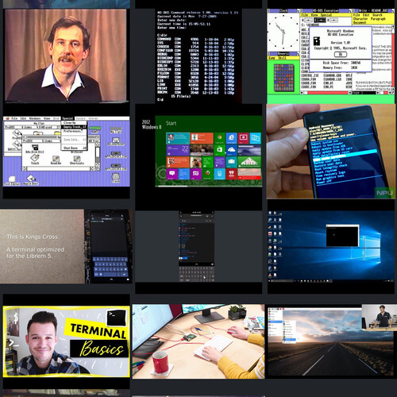

#69: The Wizard
Tuesday, January 28th 2020, 10:38:24 pm
User Interface
In the fantastic video below you will learn about the old User Interface to
the UNIX Operating System: The Command Line Interface.
UNIX, Linux, Windows, Commodore. Can each be divided in two simple layers,
the underlying Operating System (OS), and the front-facing User Interface
(UI).


UI is not OS
You should not confuse the Operating System, with the User Interface; as
those are two separate kinds of computer programs. An Operating System, can
have many types of User Interfaces.
Commodore 64

For Example, the designers of my first computer, the Commodore 64; decided
that the best interface for a little computer is a Language Shell. Not a
Command Line, not a Graphic User Interface, but what we would call today a
REPL Shell, I would describe the Commodore UI as an efficient early
Code Editor.
Commodore 64 - Introduction to Programming - Level 1

Commodore 64 GEOS

In 1986 Berkeley Softworks came about and made the GEOS (Graphic
Environment Operating System) for use with the Commodore 1351 Mouse
MS-DOS

Microsoft went through a similar upgrade. Microsoft DOS, a Command Line
product was released in 1981.
Windows

And in 1985 Microsoft released Windows version 1.0


Android's Linux

The Android based Phone, is actually a Graphical User Interface to an
underlying Linux Operating System. It is possible to prevent the loading of
the Android Graphic User Interface, and end up in the underlying Linux
Command Line Interface (CLI). You can then connect a USB keyboard to your
phone, and type commands at it using the CLI.
Librem 5: Kings Cross Terminal

Google has locked down their own OS, they don't want to let developers in.
So, there is a new phone on the market, that all the nerds are hoping will
be a dream. They may actually ship with a proper Terminal, where you have a
proper Linux (Clone of UNIX) home directory, and can install generic
software. Visit https://puri.sm for "Laptops & phones that protect the
privacy of your family and the security of your business."

Finding Your Command Line
Your own operating system has a command prompt as well. If you use Windows
it will not be as flexible as Mac, but it is still a good example of a
Command Line Interface.
How to Open Windows Command Prompt in Windows 10


Get the $55 Raspberry PI 4

Windows is not the best for Command Line Interface magic, but don't worry
you can just buy the reasonably priced Raspberry PI (the green PCB
board thing between monitors and keyboard in the picture above), make sure
you get the latest version (It was Raspberry PI 4 in December of
2019). I recommend you go all out and get the maximum memory 4GB (at the
time of writing), along with Raspberry PI branded Keyboard and Mouse, to
show everyone that you mean business. Get two nice monitors as well (you
don't have to get the 4K)
Raspberry Pi - Getting Started with Terminal

Ken Thompson and Dennis Ritchie Explain UNIX (Bell Labs)

Ken Thompson and Dennis Ritchie

When Ken Thompson and Dennis Ritchie began creating the Unix operating
system in 1969, they did not envision that their work would become a
backbone of the computer revolution that has transformed the world »
Some commands will be hard to remember, or just look too confusing. That's
because something went wrong in their creation, maybe there wasn't enough
funds, or the programmer was still learning UNIX.
Forgive the ugly, and remember the promise of UNIX, and UNIX-like operating
systems. The command line is here to make your life simpler.
Dear Reader, UNIX is here to convince you that you are a wizard, hairy; and
armed with many a fancy spell to hoot.
